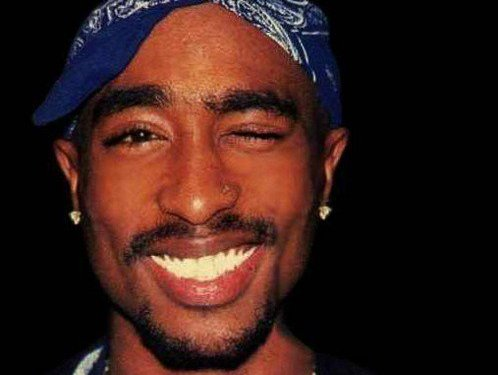
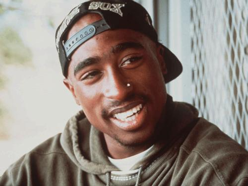
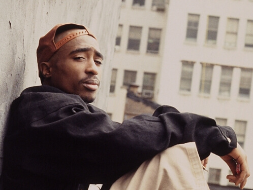
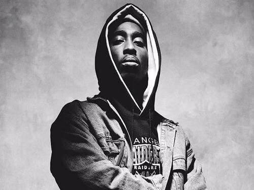
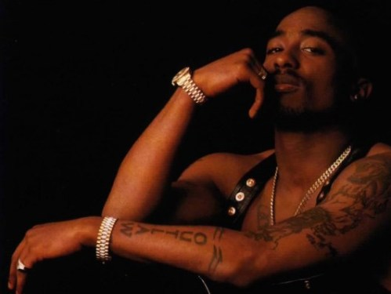
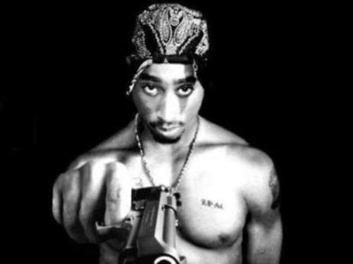
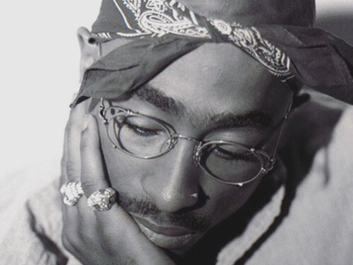

Death is not the greatest loss in life. The greatest loss is what dies inside while still alive. Never surrender.

2Pac became the unlikely martyr of gangsta rap, and a tragic symbol of the toll its lifestyle exacted on urban black America. At the outset of his career, it didn’t appear that he would emerge as one of the definitive rappers of the ’90s — he started out as a second-string rapper and dancer for Digital Underground, joining only after they had already landed their biggest hit. But in 1991, he delivered an acclaimed debut album, 2Pacalypse Now, and quickly followed with a star-making performance in the urban drama Juice. Over the course of one year, his profile rose substantially, based as much on his run-ins with the law as his music. By 1994, 2Pac rivaled Snoop Dogg as the most controversial figure in rap, spending as much time in prison as he did in the recording studio. His burgeoning outlaw mythology helped his 1995 album Me Against the World enter the charts at number one, and it also opened him up to charges of exploitation. Yet, as the single «Dear Mama» illustrated, he was capable of sensitivity as well as violence. Signing with Death Row Records in late 1995, 2Pac released the double-album All Eyez on Me in the spring of 1996, and the record, as well as its hit single «California Love» confirmed his superstar status.